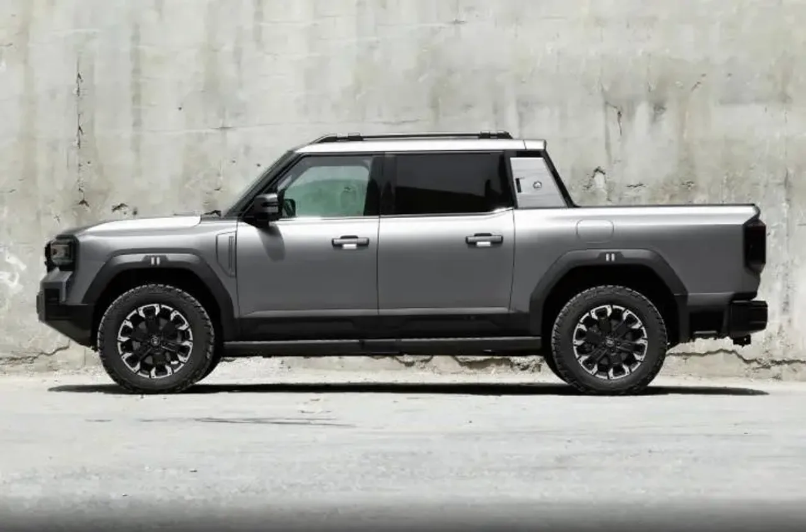
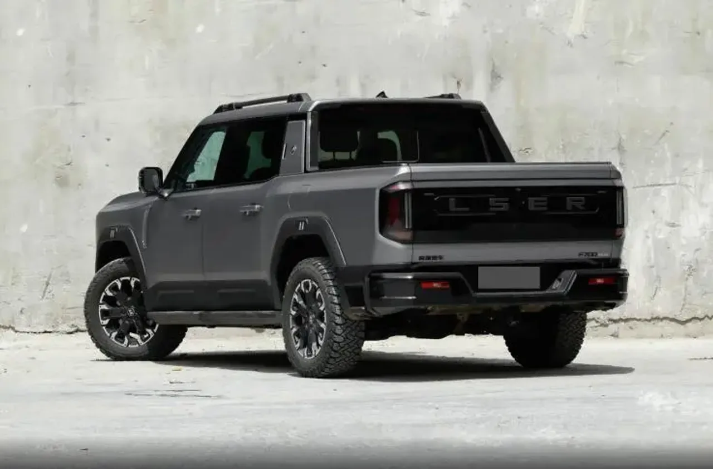
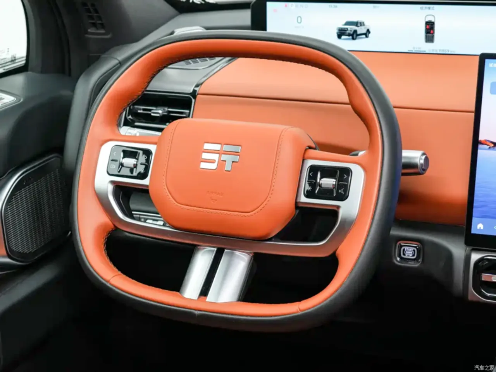

▲ 지투어 종헝 F700. 892마력 PHEV 픽업트럭으로, 블록형 헤드램프와 대형 그릴이 토요타 랜드크루저 프라도를 연상시킨다는 평가를 받는다 ⓒ CarNewsChina 제공
체리자동차의 오프로드 전문 브랜드 지투어(Jetour)가 신형 PHEV 픽업트럭 '종헝(Zongheng) F700'을 8월 6일 중국에서 정식 출시했습니다. 2.0리터 가솔린 하이브리드 엔진과 전후방 차축에 각각 얹힌 듀얼 모터를 결합해 최대 892마력(665kW), 1,135Nm의 토크를 냅니다. 0-100km/h 가속은 5초 안에 끝납니다.
1. 892마력, 0-100km/h 5초의 픽업
F700의 심장은 '쿤펑 슈퍼 에너지 하이브리드 CDM-O' 시스템입니다. 2.0리터 터보 가솔린 엔진에 CATL 배터리 기반 듀얼 모터를 결합해, 픽업트럭 체급에서는 이례적인 892마력을 냅니다. 0-100km/h 가속이 5초 이내라는 수치는, 웬만한 스포츠 세단과 견줄 만한 성능입니다. 오프로드 픽업이 이 정도 가속력을 낸다는 것 자체가 이례적입니다.

▲ F700의 측면 실루엣. 루프랙과 볼드한 펜더 클래딩을 갖춘 정통 픽업트럭 형태다 ⓒ CarNewsChina 제공
2. 도강 900mm, IP68 방수의 오프로드 성능
F700의 오프로드 스펙도 만만치 않습니다. 도강 가능 깊이가 최대 900mm에 달하고, IP68 방수 등급까지 획득했습니다. 접근각 32도, 이탈각 15도, 최대 등판각 45도의 오프로드 성능도 갖췄습니다. 여기에 배터리와 전기 시스템 전체가 방수 처리된 만큼, 험로 주행 중 침수 상황에서도 안정적인 작동을 노렸습니다.
| 항목 | 내용 |
|---|---|
| 최고출력 | 892마력(665kW) |
| 최대토크 | 1,135Nm |
| 0-100km/h | 5초 이내 |
| 순수전기 주행거리(CLTC) | 150km |
| 통합 주행거리 | 1,300km |
| 도강 깊이 | 최대 900mm |
| 가격 | 6,100만~7,000만원(기간 한정) |

▲ F700의 후면. 오프로드 전용 픽업답게 두꺼운 언더가드와 대형 오프로드 타이어를 갖췄다 ⓒ CarNewsChina 제공
3. "랜드크루저 얼굴"이라는 평가
F700의 디자인은 지투어의 대형 SUV G700과 같은 언어를 씁니다. 블록형 헤드램프와 두꺼운 세로형 그릴이 토요타 랜드크루저 프라도를 강하게 연상시킨다는 평가가 해외 매체에서도 반복적으로 나왔습니다. 오프로드 픽업 시장에서 랜드크루저·포드 레인저 같은 검증된 강자들의 디자인 문법을 차용하는 것은 중국 브랜드들 사이에서 흔한 전략이지만, F700의 경우 그 유사성이 유독 두드러진다는 지적이 많습니다.

▲ F700의 스티어링 휠. 오렌지 컬러 가죽 마감과 대형 센터 디스플레이로 오프로드 픽업치고는 고급스러운 실내를 강조한다 ⓒ CarNewsChina 제공
4. 6,100만원대, 국내 도입 가능성은
F700은 중국 시장에서 29만9,900위안(약 6,100만원)부터 33만9,900위안(약 7,000만원)까지 세 가지 트림으로 판매됩니다. 다만 이는 '기간 한정 가격'으로 명시돼 있어 향후 인상 가능성이 있습니다. 892마력이라는 스펙에 비하면 파격적인 가격대라, 포드 레인저·토요타 하이럭스 등 기존 강자들에게 위협이 될 수 있다는 평가가 나옵니다. 국내 시장과 관련해서는 KGM을 통한 도입 가능성이 거론되고 있어, 실제 국내 상륙이 이뤄질지 지켜볼 대목입니다.
5. 정리 — 스펙만 보면 파격, 관건은 신뢰도
F700은 스펙표만 놓고 보면 동급 최강 수준의 픽업트럭입니다. 892마력, 도강 900mm, 통합 주행거리 1,300km는 기존 오프로드 픽업 시장의 기준을 뒤흔들 만한 수치입니다. 다만 신생 브랜드의 오프로드 픽업이 실제 험로에서 검증된 내구성과 신뢰성을 확보하기까지는 시간이 필요합니다. 디자인 유사성 논란과 별개로, 중국 픽업트럭이 글로벌 오프로드 시장에 본격적으로 도전장을 내밀고 있다는 점만은 분명해 보입니다.